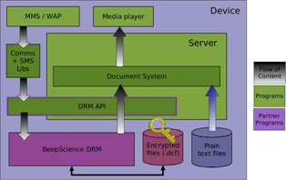

|
Home · All Namespaces · All Classes · Grouped Classes · Modules · Functions | |
DRM protected content in Qt Extended is presented alongside regular content and is browsed, launched, moved, and deleted in the same manner. When presented in a document selector or launcher view; protected content can be identified by a superimposed key icon, which may be barred indicating the content has no valid rights.
The DRM architecture is shown in the following diagram:

Constraints may be placed on the rendering of DRM content restricting thing such as the number of times and the time in which the content may be rendered so in order to comply with these constraints there are some additional steps that must be when rendering protected content.
First to acquire access to a DRM protected file a license must be requested using the QDrmContent class, if there are current rights for the file a license will be granted immediately, if not the user may be prompted to download a license or visit a web site. Once a license has been granted the plain-text content of DRM protected files may be accessed using the standard Qt file API or the file access methods of QContent. When access is to the file is no longer required the license should be released which will prevent any further access to the content.
Once a license has been granted and file access is available it is necessary to update the constraints of the protected file as it is rendered. This is performed using calls to QDrmContent::renderStarted(), QDrmContent::renderPaused(), and QDrmContent::renderStopped() on the QDrmContent instance the license for the file was requested from. The agent will time these calls and count the number of times rendering is started and update the constraints. If rights to the file expire while it is being rendered QDrmContent will emit a rights expired signal notifying the application it should release its license and stop rendering the content.
Received DRM files may be content files, or rights objects or triggers. DRM content files is saved to the file system and registered with the document system like any other content. The preferred method of saving content is to construct a new QContent and assign it the name and type of the received file and then write the file to the QContent using either the QContent::save() or by opening a write only QIODevice using QContent::open() and writing to it. If the IO device is used it is important to commit the QContent after closing the IO device to ensure the QContent is saved.
If the file is rights object or trigger it shouldn't be saved to the file system, instead a Qt Extended Data Sharing (QDS) service which handles the type of the file should be invoked. File types that should be handled in this manner can be identified by performing a search for a service with the request type that of the received file, no response type and the attribute 'handle', the 'drm' attribute may also optionally be used to only invoke services for DRM file types.
The example below checks for a service which handle the mime type of received data and invokes it if found, if not found it saves the data and invokes the default application for handling it.
void receive( const QString &name, const QString &type, const QByteArray &data )
{
// First check if the mime type is handled by a QDS service.
QDSServices services( type, QString(), QStringList() << "handle" );
if( !services.isEmpty() )
{
QDSServiceInfo service = services.first();
QDSAction action( service );
action.exec( QDSData( data, QMimeType( type ) ) );
}
else // Not handled by a QDS service so save to the file system and open in the default application.
{
QContent content;
content.setName( name );
content.setType( type );
content.save( data );
content.commit();
content.execute();
}
}
Some DRM format such as OMA DRM messages need to be converted to a localized format when they are received, the Qt Extended document system will perform this automatically when the data is saved to the file system using QContent. If an application does not intend to save the received data directly to the file system for whatever reason QDS services are provided to convert the data to the localized format. The QDS signature for these services is the same as for handling rights objects and triggers except it also has a response type.
Qt Extended includes a reference integration of the Beep Science OMA DRM agent version 2.4 which implements the Open Mobile Alliance (OMA) DRM version 1.0 and version 2.0 standards.
| Copyright © 2009 Trolltech | Trademarks | Qt Extended 4.4.3 |